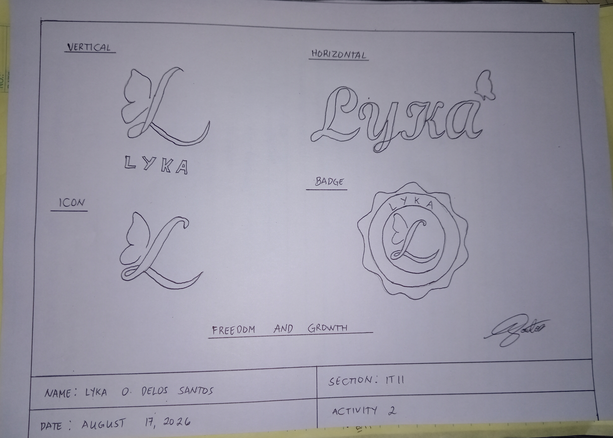
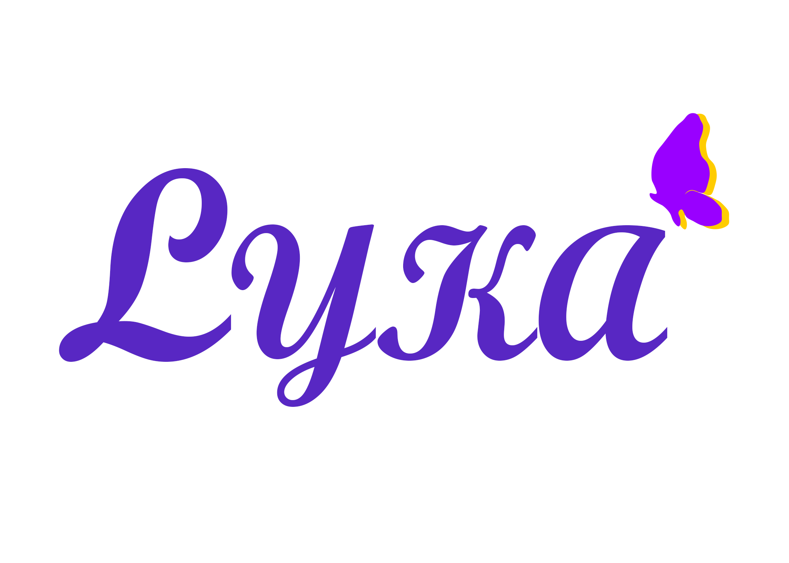
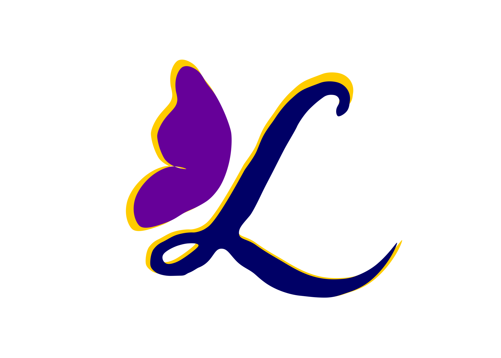
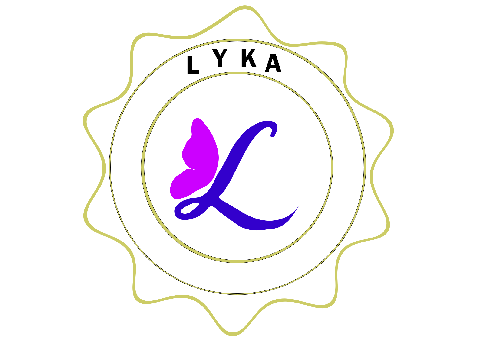

← Back to Projects
← Back to Projects
← Back to Projects
← Back to Projects
Activity 2
Creating a Brand Logo Design that represents my personal design Identity, creativity and personal values.
For this activity, I created a personal logo design using my name, Lyka, and my initial letter "L" as the main elements of the brand identity. I developed four logo variations: vertical, horizontal, icon, and badge layouts to demonstrate how a single brand identity can be adapted to different formats and applications. I incorporated a butterfly into the design as a symbol of freedom, transformation, and continuous growth. The butterfly represents the idea of embracing change, discovering one's potential, and having the freedom to express individuality. I titled the concept "Freedom and Growth" because it reflects my personal values and the creative journey I want my brand to represent.
STAGE 01
This is my initial hand-drawn concept before transforming it into digital art.

The first stage of the project, where I planned the composition, layout, and overall appearance of my design.
STAGE 02
Here is the finished digital version of my original sketch.




The completed design after applying colors, typography, visual elements, and other design improvements.